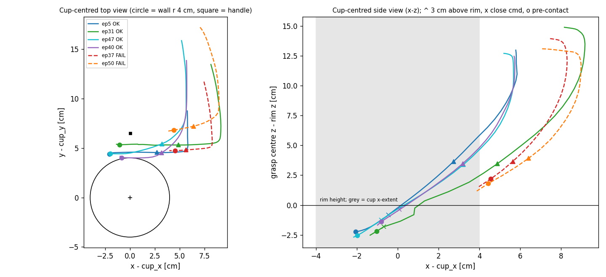

Making VLA experiments trustworthy
I reproduced a VGGT-based 3D-aware vision-language-action (VLA) policy as the team baseline, then spent much of the internship making sure the experiments built on it could be trusted.
My part: reproduction, experiment-integrity tooling, rollout recording and failure analysis.

problem
The team wanted to test whether 3D information helps a VLA policy act. A comparison like that is only as good as the baseline and the pipeline underneath it: if two runs differ in something other than the method, the result says nothing about the method.
what I did
- Reproduction. Reproduced a VGGT-based 3D-aware VLA policy (VGA) as the team baseline. I reconciled the paper against the official VGGT code, resolved unspecified details with the authors, and implemented the proprioception encoder, action/proprio normalization and image augmentation with unit tests. Components were validated against the OpenVLA-OFT reference implementation.
- Experiment-integrity tooling. Pre-training checks of the instantiated model (trainable parameters, config flags, dtype) against the baseline; SHA-256-verified source snapshots per run; evaluation guards comparing language caches, simulator assets and package hashes against a reference run; save → reload → output checks for checkpoints.
- Evaluation discipline. Measured evaluation variance across training seeds, sampling seeds and checkpoints before comparing methods, and pre-registered decision criteria in git before looking at results.
- Rollout recording. Added recording to LIBERO evaluation: per-step multi-view RGB, robot state, and predicted vs. executed actions.
- Method experiments. Ported a discrete diffusion action decoder (DD-VLA style) and compared it with the regression head and several training variants on LIBERO, with multi-seed baseline evaluation. Ran auxiliary-learning (current vs. future depth) and geometry-conditioning experiments, using input-ablation diagnostics to test whether the added 3D signals actually influenced predicted actions.
- Documentation. Wrote up 19 decision criteria, 9 paper reviews, topic reports and a handoff guide for the team.
what I found
Several defects had invalidated results before anyone noticed:
- a language-embedding cache mismatch caused by a library version difference, so two runs compared as equals were not equal. Their configs looked identical: cached embeddings bypass the language model, so the version difference never showed up in config;
- a depth-token ordering bug: a reshape grouped neighbouring depth values into one token instead of pairing each cell's depth with its confidence. Attention and gradient analysis missed it; a simple statistic caught it, because both input channels had the same mean. It is fixed and covered by 32 regression tests;
- a config flag that silently never reached its module;
- evaluation-order dependence in LIBERO.
Using the rollout recordings, replay and interventions on approach pose and object layout localized manipulation failures to the pre-contact approach phase, before the gripper touches the object.

limitations and open questions
- Quantitative LIBERO results are not published here.
- I did not train or evaluate OpenVLA or OFT myself. Reproduction components were checked against the OFT reference through intermediate-value comparison and ground-truth action replay.
- Performance dropped late in training in some runs. The root cause is unresolved.
- Where a conclusion was not confirmed, it was recorded as unconfirmed rather than folded into the results.